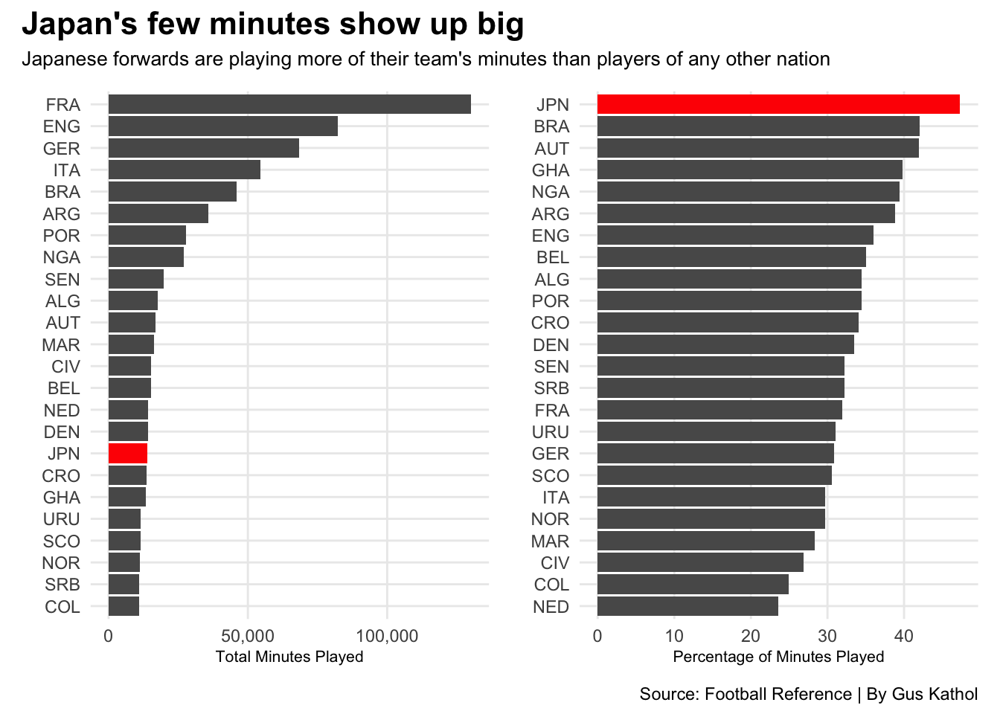

Attaching package: 'scales'
The following object is masked from 'package:purrr':
discard
The following object is masked from 'package:readr':
col_factor
Code
library(ggtext)library(ggalt)
Registered S3 methods overwritten by 'ggalt':
method from
grid.draw.absoluteGrob ggplot2
grobHeight.absoluteGrob ggplot2
grobWidth.absoluteGrob ggplot2
grobX.absoluteGrob ggplot2
grobY.absoluteGrob ggplot2
bar1 <-ggplot() +geom_bar(data=current_standard, aes(x=reorder(Nation, total_minutes), weight=total_minutes)) +geom_bar(data=japan, aes(x=reorder(Nation, total_minutes), weight=total_minutes), fill ="red") +coord_flip() +scale_y_continuous(labels=comma) +labs(x="", y="Total Minutes Played") +theme_minimal()bar2 <-ggplot() +geom_bar(data=current_standard, aes(x=reorder(Nation, playingtime_percent), weight=playingtime_percent)) +geom_bar(data=japan, aes(x=reorder(Nation, playingtime_percent), weight=playingtime_percent), fill ="red") +coord_flip() +labs(x="", y="Percentage of Minutes Played") +theme_minimal() bar1 + bar2 +plot_annotation(title ="Japan's few minutes show up big ",subtitle ="Japanese forwards are playing more of their team's minutes than players of any other nation",caption ="Source: Football Reference | By Gus Kathol") &theme(plot.title =element_text(size =16, face ="bold"),axis.title =element_text(size =8), plot.subtitle =element_text(size=10), panel.grid.minor =element_blank(),plot.title.position ="plot" )

Chart for goals and assist and shot creating actions
Code
ggplot() +geom_point(data = current_standard, aes(x = Goals_Plus_Assist, y = Shot_Creating_Actions_Per_Ninety)) +geom_point(data = croatia, aes(x = Goals_Plus_Assist, y = Shot_Creating_Actions_Per_Ninety), color ="blue") +geom_point(data = japan, aes(x = Goals_Plus_Assist, y = Shot_Creating_Actions_Per_Ninety), color ="red") +geom_text_repel(data=croatia, aes(x=Goals_Plus_Assist, y=Shot_Creating_Actions_Per_Ninety, label="Croatia")) +geom_text_repel(data=japan, aes(x=Goals_Plus_Assist, y=Shot_Creating_Actions_Per_Ninety, label="Japan")) +geom_encircle(data=japan, aes(x=Goals_Plus_Assist +.025, y=Shot_Creating_Actions_Per_Ninety +.2), s_shape=0, expand=.18, colour="red")+theme_minimal() +labs(x="Goals Plus Assist Per 90 ", y="Shot Creating Actions Per 90", title="A new team enters the mix", subtitle="Croatian and Japanese forwards are providing more points for their teams than any other nations.", caption="Source: Football Reference | By Gus Kathol" ) +theme(plot.title =element_text(size =20, face ="bold"),axis.title =element_text(size =9), plot.subtitle =element_text(size=10), panel.grid.minor =element_blank(),plot.title.position ="plot" )